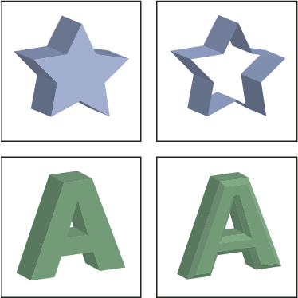

Extrude & Bevel options
- Extrude Depth
- Sets the depth of the object, using a value between 0 and 2000.
- Cap
- Specifies whether the object appears solid (Revolve Cap On ) or hollow (Revolve Cap Off ).
- Bevel
- Applies the type of beveled edge you choose along the depth (z axis) of the object.
- Height
- Sets the height between 1 and 100. Bevel heights that are too large for an object may cause the object to self-intersect and produce unexpected results.
- Bevel Extent Out
- Adds the bevel to the object’s original shape.
- Bevel Extent In
-
Carves the bevel out of the object’s original shape.

Extruded object with cap (top left) compared to no cap (top right); object without a beveled edge (bottom left) compared to object with a beveled edge (bottom right)